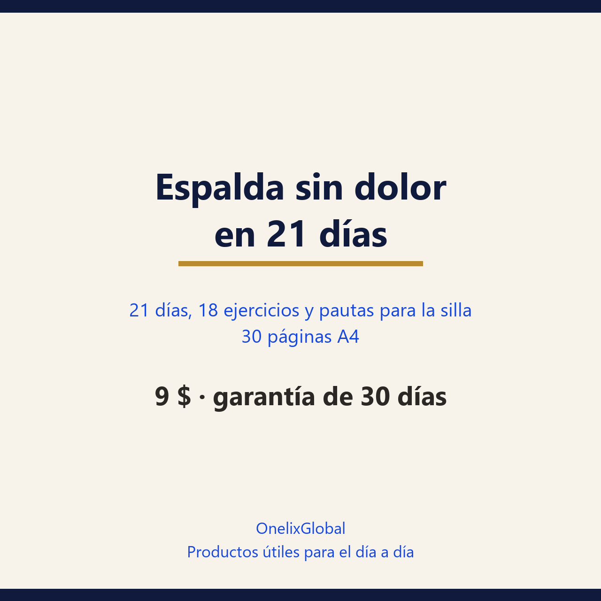

Veintiún días con una rutina base de 12 minutos y una caminata, para el dolor lumbar que dejan las horas de silla. Sin faja, sin aparatos y sin prometer cero dolor.
30 días de garantía: si no te sirve, escribes y se resuelve.
Pago seguro en Gumroad · PDF para leer en el móvil, la tablet o impreso.

30 páginasPDF · españolSuelo, una silla, una pared, una toalla y una banda elástica o una media larga. Cada día trae su objetivo, su dosis y la señal de que has terminado: no hay que elegir entre veinte vídeos ni montar un gimnasio.
El registro de 21 días se resume en tres números —días con rutina, minutos de caminata y días con dolor de 7 o más— y hay siete señales de progreso que no dependen del dolor, como agacharte sin pensarlo dos veces.
La guía trabaja fuerza básica, movilidad de cadera y columna dorsal, pausas activas cada 35-40 minutos y sueño. Avisa de lo que las guías clínicas descartan: faja, plantillas, reposo largo y paracetamol solo.
Cada uno de los 18 ejercicios lleva su contraindicación, y hay un capítulo de señales de alarma: pérdida de fuerza, adormecimiento en la entrepierna, fiebre con dolor de espalda o dolor que despierta cada noche.
Preferimos decirlo claro antes de que pagues.
trabajas o estudias sentado y al final del día notas la lumbar cargada; si has tenido brotes y quieres un plan para no repetirlos; si ya probaste faja, calor y masajes y quieres algo que dependa de ti; si necesitas una rutina corta con principio y fin, no una lista de estiramientos suelta.
tienes pérdida de fuerza en una pierna, adormecimiento en la zona de la entrepierna, fiebre con dolor de espalda, dolor después de un golpe fuerte o dolor que te despierta cada noche sin cambiar de postura: eso es consulta médica hoy, no una guía. Tampoco si buscas un diagnóstico o una corrección de la postura: la guía es educativa, no sustituye una valoración profesional ni una sesión de fisioterapia, y no promete cero dolor.
No. Suelo, silla, pared, toalla y una banda elástica o una media larga cubren todo el plan. Si tienes gimnasio, la guía indica cuándo añadir remo o prensa ligera sin adelantarte de fase.
En la mayoría de los casos sí, con ajustes y con el visto bueno de quien te valora. La hernia no contraindica el movimiento; lo que lo contraindica es una irritación nerviosa activa. La guía lo explica en el día 8 y en su capítulo de hernia.
Lo habitual es notar menos rigidez en la primera semana y cambios más claros de función entre la tercera y la sexta. Si a las seis semanas no hay ningún cambio, la guía recomienda revisar el diagnóstico y el plan, no cambiar de método otra vez.
Hay una versión mínima —respiración, balanceo de pelvis y una caminata corta— y una regla clara: nunca dos días en cama. Si el brote viene con pérdida de fuerza o adormecimiento en la entrepierna, es consulta, no rutina.